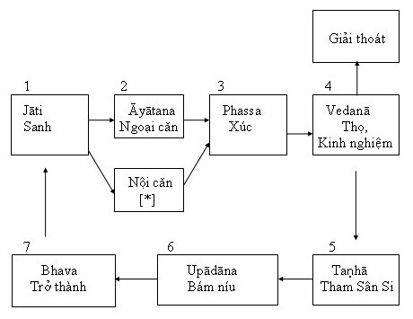

|
Abhidhamma Áp
Dụng
Dr. N. K. G.
Mendis
4 Sắc thể Thực tại tuyệt đối thứ ba là rūpa, sắc thể. Theo sự phân tích về sắc thể, Abhidhamma nhìn nhận có 28 loại hiện tượng vật chất. Bốn trong hai mươi tám này là loại chính, còn lại là phụ. Loại phụ tùy thuộc vào loại chính. Bốn yếu tố chính (cattāri mahā bhūtānī) là đãt (paṭhavi dhātu), nước (āpo dhātu), gió (tejo dhātu), lửa (vāyo dhātu). Không có một đơn vị vật chất nào mà không chứa đủ bốn yếu tố này, chỉ khác nhau ở tỷ lệ. Yếu tố nào có tỷ lệ cao hơn ba yếu tố kia sẽ làm cho đối tượng mang đặc tính của yếu tố ấy. Trong kinh Mahā Rāhulovāda Sutta, đức Phật giảng cho Rāhula: Yếu tố đất có thể ở bên trong (con người) hay ở bên ngoài. Nói về phần trong, bất cứ cái gì cứng, đặc hay từ đó mà tạo thành như tóc ở đầu, lông ở thân, móng tay chân, răng, da, thịt, gân, xương và nhiều bộ phận khác, là yếu tố đất. Bất cứ yếu tố đất nào bên trong hay là yếu tố đất bên ngoài, chúng chỉ là yếu tố đất. Yếu tố nước có thể ở bên trong hay bên ngoài. Nói về phần trong, bất cứ cái gì lỏng hay từ đó mà tạo thành như nước mật, đờm, mủ và máu là yếu tố nước. Bất cứ cái gì yếu tố nước bên trong hay là yếu tố nước bên ngoài, chúng chỉ là yếu tố nước. Yếu tố lửa có thể ở bên trong hay bên ngoài. Nói về phần trong, bất cứ cái gì nóng, ấm hay từ đó mà tạo thành như cái tạo cho con người có sanh lực, được tiêu thụ hay phải đốt đi hay là cái từ đó thức ăn được tiêu hóa, đó là yếu tố lửa. Bất cứ cái gì yếu tố lửa bên trong hay là yếu tố lửa bên ngoài, chúng chỉ là yếu tố lửa. Yếu tố gió có thể ở bên trong hay bên ngoài. Nói về phần trong, bất cứ cái gì di động, gió và từ đó mà tạo thành như hơi thở lên và xuống, hơi trong bụng, gió thổi qua tứ chi, hơi thở ra vào, là yếu tố gió. Bất cứ cái gì yếu tố gió bên trong hay là yếu tố gió bên ngoài, chúng chỉ là yếu tố gió. Trong kinh này, đức Phật cũng tả về yếu tố không gian (ākāsa dhātu) là, Ngài nói, cũng có thể ở bên trong hay bên ngoài. Nói về phần trong, bất cứ cái gì là khoảng không, có chỗ, và từ đó mà tạo thành như những lỗ, lỗ hổng trong cơ thể là yếu tố không gian. Bất cứ cái gì yếu tố không gian bên trong hay là yếu tố không gian bên ngoài, chúng chỉ là yếu tố không gian[1]. Nên chú ý rằng trong mỗi tỷ dụ đức Phật chỉ ra sự đồng nhất có tính căn bản giữa những yếu tố bên trong và bên ngoài. Ý nghĩa của sự đồng nhất này sẽ được bàn đến sau này. Những yếu tố phụ (upādāya rūpāni). Hai mươi bốn yếu tố phụ được chia thành hai nhóm. Như bốn yếu tố chính, mười bốn được trực tiếp tạo thành (nipphanna). Đây là những phần tử cốt yếu của vật chất. Mười yếu tố kia được gián tiếp tạo thành (anipphana). Đây chỉ là những đặc tánh của nhóm các yếu tố trực tiếp và không phải là phần tử vật chất. Vì thế, sự phân loại này bao gồm cả khía cạnh vật thể và chức năng của vật chất. Những yếu tố phụ được trực tiếp tạo thành gồm có: 1. Năm tiếp nhận giác quan (pasāda rūpāni): cakkhu pasāda nằm quanh con ngươi, có rất ít, nếu gom lại không lớn hơn đầu con chấy; sota pasāda, chất này nằm quanh vòng tròn có lông tai mầu đồng mọc quanh sâu trong ống tai; ghāna pasāda tận trong hốc mũi trên cao, chỗ xương mũi chẻ hai, jivhā pasāda chỗ nấm lưỡi nếm thức ăn, nhiều nhất ở giữa lưỡi (nếu kể cả cuống lưỡi) và kāya pasāda, nằm khắp thân trừ chỗ dưới móng tay, vẩy da chết khô, và chỗ tóc và móng tay không dính đến da[2]. 2. Bốn yếu tố kích thích (gocara rūpāni): màu sắc, thanh, mùi và vị. Xúc (cảm thọ thuộc về sờ mó) không được đề cập trong nhóm này vì, không như các yếu tố kia, cảm thọ xúc giác không phải là yếu tố giác quan độc nhất mà là ba trong bốn yếu tố chính - đặc, nhiệt và chuyển động- giải thích rõ về áp lực, kết cấu và sự chịu đựng của đối tượng. Yếu tố dính liền là ngoại lệ vì nó quá vi tế để tạo nên bất cứ cảm thọ giác quan. Bởi vì sự kích thích giác quan có thể tạo đau hay khoái lạc, còn bốn kích thích kia chỉ khởi lên thọ trung tính. 3. Yếu tố phái tính (bhāva rūpāni): đến ngay vào lúc thụ thai để quyết định giống tính của một người. Sự quyết định giống tính này có liên hệ đến nghiệp lực. 4. Yếu tố tâm-căn (hadaya vatthu): trong thời đức Phật có quan điểm cho rằng quả tim tạo nên chỗ tọa vị cho tâm thức. Đức Phật không bao giờ chấp thuận hay bác bỏ quan điểm này. Ngài đề cập đến căn bản của thức như sau: yam rūpam nissāy - ‘cái sắc thể kia tùy vào yếu tố tâm và yếu tố thức nào khởi lên’. Vì tâm và vật phụ thuộc lẫn nhau, rất có lý để kết luận rằng qua câu ‘cái sắc thể kia’ đức Phật ngụ ý đến bất cứ mô nào của cơ thể đều là căn cứ cho tâm thức, ngoại trừ những mô nào đóng vai trò căn cứ cho thức căn. Ta có thể hiểu là các tế bào thần kinh sống. 5. Yếu tố sinh khí (jīvitindriya): như khả năng tạo sinh khí cho tâm, một trong những tâm phụ tùy chung, mang sức sống cho tâm và cả tâm phụ tùy, cái khả năng tạo sinh khí cho thân mang sức sống đến cho các chất hữu cơ của cơ thể. Sanh từ nghiệp, nó được tái tạo trong từng khoảnh khắc. Cả hai khả năng tạo sinh khí cho tâm và thân đều ngừng vào lúc chết. 6. Dưỡng tố (āhāra rūpa): là chất bổ dưỡng nuôi thân này. Những yếu tố phụ được gián tiếp tạo thành là: 1. Yếu tố không gian (ākāsa dhātu): đó là cái giữ cho các đơn vị vật chất tách rời nhau và ngăn cho khỏi hội hợp. Nó không phải là thực tại khách quan mà là một ý niệm được tạo ra từ sự đi vào sanh linh của các đơn vị vật chất. 2. Hai yếu tố thông tin (viññatti): đó là yếu tố thông tin thuộc về thân (kāya viññatti), yếu tố thông tin thuộc về ngữ (vaci viññatti), chịu trách nhiệm về sự liên lạc về thân và miệng. Chúng được gọi là thông tin vì chúng làm cho sự thông tri giữa con người có thể thực hiện được. Hai yếu tố này xảy ra mười bẩy lần nhanh hơn những yếu tố vật thể khác, có cùng thời gian cho một đơn vị tư tưởng. 3. Ba biến-tố (yếu tố biến đổi được-vikāra rūpāni): nhẹ nhàng (lahutā), mềm dẻo (mudutā) và thích ứng (kammaññatā). Những yếu tố này chịu trách nhiệm cho sức khỏe, tráng kiện và hoạt bát của thân thể. Chúng được sanh ra từ tư tưởng thiện, có tiết độ trong thói quen ăn uống và khí hậu dễ chịu. 4. Bốn yếu tố giai đoạn (lakkhaṇa rūpāni): khởi đầu (upacaya), sanh trưởng (santati), già yếu (jaratā) và diệt (aniccatā). Đây là những giai đoạn trong một thời kỳ sống của một yếu tố trong diễn trình liên tục của đổi thay. Sự sanh khởi của sắc thể (samuṭṭhāna) Các yếu tố vật chất không bao giờ xảy ra trong sự biệt lập nhưng theo từng nhóm hay từng tập hợp được gọi là rūpa- kalāpas[3]. Một kalāpa có thể chứa từ tám đến mười ba yếu tố vật chất. Không có kalāpa nào mà không có ít nhất tám yếu tố, bốn yếu tố chính và bốn yếu tố phụ là mầu, vị, mùi và dưỡng tố. Một đơn vị chỉ chứa tám yếu tố này (aṭṭha-kalāpa) được gọi là nhóm tám nguyên chất. Hiện tượng vật chất khởi lên qua bốn nhân: nghiệp, tâm, nhiệt và chất dinh dưỡng. Tãt cả các thực tại tối hậu về sắc thể chỉ có thể thấy được bằng tuệ nhãn, nhưng đặc tính của sắc thể được biểu lộ trên cơ thể con người. Khi bạn giận dữ, ngay cả một đứa con nít cũng có thể biết được bạn đang giận. Cơ thể bạn phản chiếu các cảm xúc bạn đang có. · Nghiệp quyết định cơ thể vật lý vào lúc thụ thai. Ở khoảnh khắc này, ba nhóm được sanh từ nghiệp: đặc tính của giống phái, thân căn và ý căn. Đặc tính về giống phái (bhāva dasaka) có tám yếu tố chính cộng thêm phái tính (hoặc là đực hay cái) và yếu tố sanh khí. Đặc tính về thân (kāya dasaka) được tạo thành từ nhóm tám trên cộng với yếu tố cảm giác của thân và yếu tố sanh khí. Đặc tính của ý căn (vatthu dasaka) được tạo thành từ nhóm tám trên cộng với yếu tố ý căn và yếu tố sanh khí. Sau khi bào thai được tạo nên qua ba đặc tính này, vào khoảng tuần thứ mười một của thời kỳ thai nghén trở đi, các đặc tính của bốn giác quan kia bắt đầu thành lập. Nghiệp tạo nên và nuôi dưỡng những hiện tượng trong suốt kiếp đời. · Tâm (citta). Tâm ý không những ảnh hưởng đến vật chất mà còn sanh ra hiện tượng vật chất. Những bệnh liên quan đến sự xáo trộn tâm lý như loét cuống bao tử, áp huyết cao và suyễn chỉ rõ những xáo trộn như thế. Những tỉ dụ khác như phi thân, định tâm để điều khiển ngoại vật[4], đi trên than lửa. Trong chuỗi các biến cố bình thường, tâm chịu trách nhiệm về những cử động có tác ý của thân xác và lời nói, dáng diệu, sự hô hấp, toát mồ hôi hay chảy nước mắt, và ba biến tố - nhẹ nhàng, uyển chuyển và thích ứng hữu hiệu. · Nhiệt (utu) Yếu tố nhiệt (tejo), một trong bốn yếu tố chính hiện hữu trong tất cả các nhóm vật chất, có thể tự làm cho các loại vật chất khác khởi lên, kể cả các nhóm có đặc tính đơn giản hay phức tạp. · Chất dinh dưỡng (āhāra). Yếu tố dinh dưỡng (ojā) có mặt trong tất cả các nhóm, có khả năng tạo ra các hiện tượng vật chất khác nhau từ đó có sức sản sanh. Những yếu tố này bắt đầu sanh khởi từ khi các dưỡng tố của người mẹ chuyển sang thai tạng. Dưỡng tố này là một trong những nhân cho sự sống lâu. Sự già yếu của sắc thể (jarā) Nguyên nhân gần của già yếu là sự chín mùi của vật chất, sự chín mùi này xảy ra qua những hoạt dộng không ngừng nghỉ của yếu tố nhiệt trên các mô phát sanh ra vào những lúc khác nhau. Có hai hình thức già yếu. Một loại, không nhìn thấy được, liên tiếp xảy ra trong mỗi nhóm từ lúc sanh cho đến lúc diệt. Loại khác, có thể thấy được, tự biểu hiện lên như sự lọm khọm, răng gẫy, tóc bạc, da nhăn... Sự già suy vật chất được sự suy kém của giác quan và sự lụi tàn của đời người đi kèm như đức Phật đã chỉ trong kinh điển. Sự chết của sắc thể Giống như sự già yếu, cái chết có hai hình thức. Một là sự hủy diệt liên tục của vật chất vốn thể không thấy được; loại kia là hình thức có thể thấy được (maraṇa), đặc trưng bằng sự biến mất của yếu tố sanh khí, nhiệt và thức. Cái chết có thể do một trong bốn nguyên nhân sau: a) Luồng nghiệp lực (kammakkhaya) đã kiệt. Nghiệp tái tạo (janaka) có nhiệm vụ cho sự sanh khởi và tiếp nối của hiện tượng vật lý cốt yếu cho mạng sống. Khi nghiệp tái tạo này hết, sự sản sanh ra những hiện tượng chí cốt cho sanh tử này ngưng lại và cái chết xảy ra. b) Tuổi thọ đã hết (āyukkhaya). Đời sống ở những cảnh giới khác nhau có thời hạn tối đa của nó. Khi thời hạn tối đa này tới, cái chết xảy đến cho dù luồng nghiệp lực vẫn còn. Bãt cứ nghiệp tái tạo nào chưa dùng hết sẽ biểu hiện trong kiếp đời mới cùng cảnh giới. c) Sự kiệt tận của cả hai luồng nghiệp lực và tuổi thọ (ubhayakkhaya) cùng một lúc. d) Sự can dự vào của một nghiệp khác mạnh hơn (upacchedaka kamma) cắt đứt giòng nghiệp tái tạo gây ra cái chết trước khi sức sống hết. Nguyên nhân này giải thích cho những cái chết thình lình thường thấy ở trẻ con. Ba nguyên nhân đầu chịu trách nhiệm cho cái chết có kỳ hạn (kāla maraṇa), nguyên nhân thứ tư cho chết yểu (ākāla maraṇa). Cả bốn được mô tả như sự dập tắt ngọn lửa đèn dầu có thể do một trong bốn nhân sau: bấc tàn lụi, hết dầu, vừa hết dầu vừa hết bấc, hay có ngọn gió mạnh thổi qua. Năm Nhóm Tập Hợp (Pañcakkhandhā) Chữ khandha có nghĩa là nhóm, số đông hay tập hợp. Đức Phật thường mô tả ‘một người’ như là một tổng hợp của năm nhóm hiện hữu. Ngài mô tả bằng danh từ upādāna, nghĩa là bám lấy, dính vào. Nên ta có danh từ pañcūpādānakkhandhā[5], được dịch là ‘năm nhóm tập hợp tạo đối tượng cho sự bám víu’: nhóm tập hợp vật thể, cảm thọ, nhận thức, hành vi tác ý và thức. Đức Phật diễn tả mỗi nhóm như là có liên kết đến āsavas. Một āsava là một nhân làm cho bại hoại, dơ bẩn, thối nát, độc hại hay có thành kiến. Có bốn āsavas là: tham dục (kāmāsava), mong được tái sanh (bhavāsava), tà kiến (diṭṭhāsava) và vô minh (avijjāsava). Điều cần phải nhấn mạnh ở đây là năm nhóm này không hiện hữu đầy đủ trong cùng một lúc. Chúng tạo nên một bảng phân loại chỉ chứa đựng những phần tử cùng loại vốn diệt lần đi và xảy ra cùng lúc theo nhiều tổng hợp khác nhau nào đó vào một lúc nào đó. Đức Phật giải rõ tính không và bản chất không vững chắc của mỗi nhóm bằng cách ví sắc như một đám bọt nước, thọ như bong bóng nước, tưởng như ảo ảnh, như thân cây chuối không lõi, và thức như sự lừa lọc qủi quái (Saṁyutta Nikāya ĪI, 140). Sắc thể và Thiền Ta đã thấy từ trước đức Phật nhấn mạnh sự đồng nhất của bốn yếu tố chính bằng cách nói rằng cả hai yếu tố trong lẫn ngoài đều có cùng bản tánh[6]. Rồi Ngài nói: ‘Qua trí tuệ trực giác toàn thiện, cần phải thấy đúng thực tướng của pháp như vầy: ‘Cái này không phải của tôi, cái này không phải là tôi, cái này không phải là tự ngã của tôi’[7]. Sự chỉ dẫn này cho thấy không có gì đặc biệt về cái thân này mà ta quen nghĩ là ‘của tôi’ và đôi khi còn tin là một cái gì ‘đặc biệt’ lắm. Cái thân ấy, theo bản chất, giống như thế giới vật chất bên ngoài. Tôn giả Sāriputta, một trong hai đại đệ tử của đức Phật, nêu ra cùng quan điểm theo một cách khác[8]. Sau khi đã diễn tả bốn yếu tố chính như đức Phật đã làm, Sāriputta tuyên bố rằng rồi có lúc khi các yếu tố bên ngoài bị kích động và hủy diệt, vậy thì ‘đáng kể gì cái thân thể yểu thọ bắt nguồn từ tham ái này?’ Khi các yếu tố đặc trong cơ thể được kích động tất cả các hình thức tăng trưởng hình thành, từ mụn cóc đến bướu ung thư. Khi yếu tố lỏng bị khích động chứng phù thủng tạo nên, phồng lên vì dung dịch lỏng tụ lại. Yếu tố nhiệt tạo cơn sốt, lở loét vì giá cóng... yếu tố gió tạo chứng đầy hơi, chứng đau bụng dưới. Nhà địa chất gắng tìm nguyên nhân của sự biến động của cơ thể và nhà khảo cứu y học tìm nguyên nhân của sự rối loạn thân thể. Nhưng, bất cứ chỗ nào bốn yếu tố chính được tìm thấy chỗ ấy có chao động, kết quả là sự khó chịu, một tình trạng hỗn độn. Về yếu tố không gian, ngài Sāriputta nói: ‘dựa vào cọc, neo, cỏ và bùn, không gian được bọc lại và sự chỉ danh ‘ngôi nhà’ được dùng đến, cùng một cách ấy, dựa vào xương, gân, bắp thịt và da, không gian được bọc lại và sự chỉ danh ‘sắc thân’ được dùng’. Các bộ phận của cơ thể cũng dùng làm đề mục thiền quán. Sự quán tưởng như vậy đem lại sự hiểu biết về bản chất của cơ thể mà không cần đến chẩn đoán bịnh lý hay sự hấp dẫn lôi cuốn. Sự quán tưởng về thân đề cập đến 32 phần cơ thể nếu được xem xét riêng rẽ, không có phần nào hấp dẫn, ngay cả tóc, da, móng tay chân và răng vốn thường được coi là cái góc con người. Cho dù một người đàn ông cho rằng người đàn bà đẹp vì ‘mái tóc của nàng’, nếu thấy sợi tóc của nàng trong tô cereal điểm tâm, hắn sẽ thấy tởm thay vì hấp dẫn. Vì không có phần nào của cơ thể có cái đẹp riêng, nên không thể nào chúng tạo toàn thân này hấp dẫn được. Sự thiền quán về bộ phận của thân thể nhằm mục đích xóa tan nhận thức điên đảo (saññā vipallāsa) coi cái xấu làm cái duyên dáng. Thực ra không phải để ức chế dục tình hay gia tăng cách đối trị về xúc cảm nhưng chỉ để giúp ta hiểu được bản chất của thân. Một quán tưởng khác - phân tích thân thể ra thành bốn yếu tố chính - giúp ta xóa tan cái ảo tưởng về tính tổng hợp nguyên vẹn của thân thể. Kinh Đại Thủ Ý cho một tỷ dụ một người bán thịt sau khi giết con bò và cắt nó ra từng phần, ngồi ở ngã tư đường. Sách giảng rằng, mỗi khi thấy xác con bò ấy, cho dù sau khi nó bị giết, người hàng thịt nghĩ về một ‘con bò’. Nhưng khi hắn cắt xác bò ra từng phần, và ngồi ngã tư đường, khái niệm ‘bò’ biến mất và khái niệm ‘thịt’ khởi lên. Hắn không còn nghĩ là đang bán ‘con bò’ nhưng bán ‘thịt’. Cũng thế, nếu một người nghĩ về thân thể theo lối ‘các yếu tố’, khái niệm ‘con người’ sẽ mất đi, được thay bằng khái niệm các yếu tố. Một lần gia chủ già lão Nakulapitā đến gặp đức Phật và nói: ‘Bạch Ngài, tôi là một người già, đã tới cuối đời, bịnh và luôn đau đớn’. Gia chủ muốn được đức Phật chỉ dẫn và khuyên bảo. Đức Phật nói: ‘Gia chủ, nó là thế. Gia chủ, nó là thế. Thân của ngươi bịnh và đầy ô nhiễm. Gia chủ, ai mang thân này, tự cho là không bệnh, dù chỉ trong giây phút, kẻ ấy là gì nếu không là kẻ ngu? Vì thế gia chủ, gia chủ cần huấn luyện như sau: ‘Thân tôi bịnh nhưng tâm tôi sẽ không bịnh’- gia chủ nên tự huấn luyện như thế’. Suy tưởng về những sự thực không thể cãi bàn về thân thể này sẽ giúp ta: 1. Diệt trừ hẳn những phức cảm, tự tôn hay tự ti, có liên quan đến thân thể. 2. Chấp nhận một thái độ có ý thức đúng đắn về thân, không nuông chiều và cũng không bạc đãi nó. 3. Xem chuyện tất nhiên của thân - suy yếu, bịnh và chết là hiện thực và với lòng bình thản. 4. Đạt được tuệ trí về khía cạnh vô ngã (anattā) trong mọi hiện tượng. -----*----- 5 Các Cảnh Giới Theo tạng Luận, có ba mươi mốt cảnh giới, hai trong số ấy ta có thể thấy được: cõi súc sanh và cõi người. Để hiểu được bản chất của các cảnh giới khác, điều cần thiết là: a) bỏ cái quan niệm có cái gì đặc biệt của con người mà không tìm thấy được trong đời sống các loài hữu tình khác; b) bỏ cái ảo tưởng rằng có, dù là chút ít, sự ổn cố vững bền hay chắc gọn trong tổng hợp tâm-sinh lý được coi như là một ‘sanh linh’; c) chấp nhận rằng con người chỉ là nhóm năm tập hợp, mỗi tập hợp biến hoại dần và không có thực thể; d) nhìn nhận rằng trong một số các cảnh giới, một hay nhiều tập hợp có thể không biểu hiện; và e) nhìn nhận rằng các cảnh giới này không hiện hữu ở một tọa độ nào đó, từ địa ngục rửa tội không đáy đến thiên đàng trong thiên hà - nhưng biểu hiện ra để đáp ứng lại với nghiệp của mình. Chúng hầu hết không xuất hiện trước ta được vì chiều không gian khác nhau, sự tương đối của thời gian, và những trình độ khác biệt của tâm thức. Ba mươi mốt cảnh giới này tạo thành saṁsāra (cõi ta bà), nơi ‘lãng du không ngừng nghỉ’ qua vòng sanh tử ta đã bị vướng vào từ vô thỉ. Những cảnh giới này được phân thành ba cõi chính: dục giới, sắc giới và vô sắc giới. Cõi Dục (kāma loka) gồm có 11 cảnh giới: A. Bốn cảnh khổ: địa ngục (niraya), ngạ qủy (asura yoni), qủy đói (peta yoni) và súc sanh (tiracchāna yoni). Tái sanh vào những cảnh này là do nghiệp ác. Sanh linh ở đây không có ý niệm về thiện ác và nói chung không thể tạo nghiệp tốt. Tuy nhiên, khi nghiệp bất thiện dẫn chúng tới cảnh giới này hết đi, vài nghiệp tốt tích chứa sẵn có thể dẫn chúng đến tái sanh vào cảnh giới khác. Chỉ có bậc Dự Lưu và những bậc thánh mới có thể đoan chắc là sẽ không sanh vào những cảnh khổ này nữa. B. Cảnh giới người - sanh vào cảnh giới này là kết quả từ những hành thiện có phẩm tính vào loại khá. Đó là cảnh giới của sự chọn lựa thiện ác, nơi định mệnh có thể được hướng dẫn. C. Sáu cõi trời: cātummahārājika (tứ thiên vương thiên), tāvatiṁsa (33 thiên), yāma, tusita, nimmānarati (chư thiên vui hưởng sự sáng tạo của mình), paranimmita-vasa-vatti (chư thiên kiểm soát sự sáng tạo ra vị khác). Tái sanh vào những cõi này xẩy ra nhờ nghiệp thiện. Các chư thiên hưởng các lạc thọ có tính mỹ thuật, sống rất lâu, đẹp đẽ và có một số thần thông. Những cõi này không phải chỉ dành riêng cho Phật tử chân thật. Bãt cứ ai sống đời chân thiện đều được sanh về cõi này. Những ai tin vào ‘thiên đường vĩnh cửu’ có thể mang niềm tin này đến cõi thiên và nhận lấy kiếp sống lâu dài ở đấy thành kiếp trường cửu. Chỉ những ai đã biết giáo pháp sẽ nhận chân rằng những cõi này là vô thường, một ngày nào đó những sanh linh ấy sẽ ra khỏi những cảnh giới ấy mà sanh vào những cõi khác. Các chư thiên có thể giúp đỡ con người bằng cách xui khiến người ta có khuynh hướng làm việc thiện, và con người có thể giúp chư thiên bằng cách mời đón chư thiên hoan hỉ với công đức của các chư thiên ấy. Cõi sắc giới (rūpa loka) gồm có mười sáu cảnh giới. Sanh linh sanh trong những cõi này là kết quả của sự chứng đắc thiền. Họ có thân làm bằng chất tốt hảo. Mười sáu cảnh giới ấy tương ứng với sự chứng đắc bốn cõi thiền như sau: A- Ba cõi là kết quả của sự chứng đắc cõi thiền thứ nhất: · brahma parisajjā-cõi của các tùy tùng của chư thiên · brahma purohitā - cõi của các phụ bộ thiên · mahā brahma - cõi đại phạm thiên B- Ba cõi là kết quả của sự chứng đắc cõi thiền thứ hai: · parittābhā - cõi thiểu quang thiên · appamānābhā brahma - cõi vô lượng quang · ābhassarā - cõi phát quang thiên C- Ba cõi là kết quả của sự chứng đắc cõi thiền thứ ba: · paritta subhā - cõi thiểu tịnh thiên · appamānasubhā - cõi vô lượng tịnh thiên · subha kinhā - cõi bất biến tịnh thiên D- Hai cõi là kết quả của sự chứng đắc cõi thiền thứ tư: · vehapphalā - cõi đại thưởng thiên · asaññasattā - cõi chúng sanh vô tưởng, chỉ có thân không có tưởng. Sanh vào cõi này là kết quả của sự hành thiền đè nén tâm thức. Hành giả nào thực hành pháp này tiếp nhận sự giải thoát khỏi khổ đau có thể được thành đạt được bằng cách thành tựu sự vô tưởng. Tuy nhiên, khi kiếp sống trong cõi này hết, các sanh linh ấy chết đi và tái sanh vào cõi có tưởng trở lại. E- Năm cõi là kết quả của sự chứng quả vị không trở lại (anāgāmiphala), giai đoạn thứ ba của chặng đường giác ngộ: · avihā brahmā - cõi trường cửu · atappā brahmā - cõi thư thái · sudassā brahmā - cõi đẹp đẽ · sudassī brahmā - cõi quang đãng · akanitthā brahmā - cõi trời cao nhất Năm cõi này được gọi là suddhāvāsā hay cõi tịnh, chỉ có thể do những ai đã hủy diệt năm ràng buộc - ngã kiến, nghi, bám vào nghi thức và nghi lễ, ái dục và sân hận - mới đến được. Họ sẽ hủy diệt những ràng buộc còn lại - thích sanh về cõi vô sắc, ngã mạn, lao chao và vô minh - trong khi sống cõi tịnh này. Những ai tái sanh ở đây được gọi là ‘Không trở lại’ vì họ không trở lại từ cõi đãy, nhưng chứng đắc chặng cuối cùng là Niết Bàn ở đó mà không trở lại. Cõi vô sắc (arūpa loka) gồm có bốn cảnh giới trong đó chúng sanh được sanh ra nhờ chứng đắc thiền vô sắc: · ākāsānañcāyatana - cõi vô biên xứ · viññāṇañcāyatana - cõi thức vô biên xứ · ākiñcaññāyatana - cõi không xứ · neva-saññā-nāsaññāyatana - cõi không có nhận thức cũng không phải không có nhận thức Nhiều người có thể hoài nghi về sự hiện hữu của các cảnh giới này, không có gì là lạ cả. Sự hoài nghi ấy được biết đến ngay vào thời đức Phật. Bộ Kinh Saṁyutta Nikāya (Ī, 54) ghi rằng một lần tôn giả Lakkhana và Mahā Moggallāna đang đi xuống đồi Kên Kên, tôn giả Mahā Moggallāna nhìn vào chỗ nào đó mỉm cười. Tôn giả Lakkhana hỏi tại sao Mahā Moggallāna cười nhưng Mahā Moggallāna nói rằng đây không phải là lúc hỏi câu đó và đã đề nghị Lakkhana nêu lại câu hỏi này trước mặt đức Phật. Sau đó khi gặp đức Phật, tôn giả Lakkhana hỏi lại câu này. Tôn giả Mahā Moggallāna nói: ‘Lúc ta cười, ta thấy một bộ xương đang đi trong không. Kên kên, quạ, diều hâu theo sau và mổ vào giữa những cạnh xương sườn khi bộ xương này khóc lên vì đau đớn. Ý nghĩ này đến với tôi: ‘Thật là quái lạ và ngạc nhiên làm sao, sanh linh này có hình thù như thế, chủ thể này có hình hài như thế’. Đức Phật rồi nói: ‘Ta cũng thấy sanh linh đó nhưng ta không nói gì về sanh linh ấy cả vì kẻ khác sẽ không tin ta. Sanh linh này xưa là người bán thịt ở Rajagaha’. Câu hỏi có thể được đặt ra là làm sao ta có thể phát triển nhĩ thông và nhãn thông để có thể nhận thức được âm thanh và cảnh sắc bên ngoài tầm mức thông thường. Để hiểu được như thế nào, phải xét đến ba yếu tố: các chiều không gian, tính tương đối của thời gian, và tầng lớp của tâm thức. Mỗi đối tượng trong cảnh giới người có ít nhất bốn chiều. Ba chiều đầu tiên là: chiều dài, chiều rộng và chiều sâu. Như thể tại một điểm kéo dài một đường ta có chiều dài, ngưng ở đó vẽ sang hướng khác cho ta diện tích, rồi ở giao điểm vẽ chiều cao cho ta thể tích. Mỗi lần rẽ hướng không những chỉ mang lại sự thay đổi về phương hướng mà còn mang lại chiều hướng với các đặc trưng của nó. Nhưng ba chiều này không chỉ có thế vì không có đối tượng nào cứng nhắc cả. Ngay cả một đối tượng trông có vẻ đứng yên, ở tầm mức nguyên tử, sẽ phát lộ ra một nhóm các vi tử hỗn loạn. Vì thế chiều cần thiết thứ tư là: thời gian. Chiều của thời gian biến cái ‘đang là’ sang ‘trở thành’ - một hành lang qua các giai đoạn quá khứ, hiện tại, vị lai. Khái niệm về thời gian của ta không dựa vào thời gian ‘đồng hồ’, nhưng nó tựu thành từ những hoạt động của các giác quan và tâm ý. Sự sanh khởi và hoại diệt không ngừng của tư tưởng đủ để đưa bằng chứng về sự chuyển động của thời gian. Ngay cả khi không có sự kích thích giác quan, giòng tư tưởng sẽ tạo ra khái niệm về thời gian và giữ ta hài hòa ăn khớp với cảnh giới này. Nhưng nếu giòng tư tưởng ngưng lại, như ở các cảnh giới cao hơn, khái niệm về thời gian sẽ thôi hiện diện. Một loại nhận thức khác biệt khác sẽ thay vào - với một mức độ nhận thức được trải rộng ra vượt qua hẳn mức độ mà ta bị ràng buộc dưới những điều kiện bình thường. Nhận thức mới này có thể được gọi là chiều thứ năm. Vì trong trường hợp của bốn chiều kia, nhận thức mới này sẽ thêm vào một chiều hướng mới, phương mới, và những đặc tính mới. Vì với nhận thức mở rộng như vậy, âm thanh và cảnh sắc sẽ được nhận biết, những âm thanh và cảnh sắc không được biết tới và không đến gần ta được ấy đã bị nhốt lại trong ý niệm thời gian hạn hẹp của chúng ta[9]. -----*----- 6 Nhân Duyên
Ai thấy lý duyên khởi, người ấy thấy
pháp. Tạng Abhidhamma dạy ta các nguyên tắc sau: · có những định luật tự nhiên chi phối vũ trụ (niyāma dhamma) · các tâm và điều kiện vật lý khởi lên có nguyên nhân - hay theo duyên khởi (paticca samuppāda) và · các mối liên hệ - có tính qui định điều kiện và ảnh hưởng - hiện hữu giữa quả và nhân (paccaya) Gạt bỏ ba nguyên tắc này ra, không còn nhân sinh quan nào khác có thể kéo ta ra khỏi sự phi lý của kiếp sống, không giải thích được nguyên nhân tạo nên sự bất công và hỗn mang trong xã hội. Gạt bỏ ba nguyên tắc này ra, cuộc sống này vô nghĩa, vô vọng, chỉ đưa đến tấn hài kịch bi đát. Mục đích cao cả của con người là tìm ra những nguyên tắc này, những định luật này, nhận thức và liễu ngộ chúng, từ đó hun đúc cuộc đời và số mệnh của mình vào cái gì có bản chất trường cửu và không chịu đổi thay (chân đế)[10]. Có thế, lý tưởng và ước mơ nhân bản, cứu cánh giải thoát mới khai mở ra từ khổ đau vô nghĩa này. Sự nhận biết về ba nguyên tắc trên cho ta sự hiểu biết tường tận hơn lời Phật dạy rồi dần sẽ giúp ta trong sự hành trì. Luật tự nhiên Kinh điển nhìn nhận năm định luật có ảnh hưởng trên trật tự tự nhiên. 1. Luật thời tiết (utuniyāma). Luật này ảnh hưởng trên các tiến trình vô cơ, điều động qua một số thay đổi về nhiệt tạo sự đổi thay trong cơ thể và thế giới bên ngoài. Trong cơ thể nó chi phối sự già suy và bệnh hoạn, với thế giới bên ngoài nó tạo gió, mưa, bốn mùa và sự thay đổi khí hậu... 2. Luật di truyền (bijaniyāma). Luật này ảnh hưởng vào thế giới động vật và thực vật để giải thích về sự truyền giống, di truyền học và khuynh hướng cha nào con nấy. 3. Luật về nghiệp (kammaniyāma). Nghiệp là hành có chủ ý qua thân khẩu ý. Hành vi nào tạo kết quả ấy, tương xứng với chính nó. Cái hậu quả không phải là sự tưởng thưởng hay hình phạt do ‘bề trên’ ban phát nhưng là hậu quả kế thừa của chính hành ấy. Hành tốt mang hạnh phúc, hành xấu tạo khổ đau. 4. Luật tâm thức (cittaniyāma) chi phối thứ tự của các diễn trình của tâm thức và tâm ý và cũng làm cho những thần thông diệu xảo như thần giao cách cảm, định tâm để điều khiển ngoại vật, thiên nhãn, thiên nhĩ và túc mệnh thông có thể thực hiện được. 5. Luật của các pháp (dhammaniyāma) giải thích các hiện tượng xảy ra vào lần sanh cuối cùng của bồ tát và những sự cố xảy ra trong suốt cuộc đời và vào lúc nhập diệt của các vị Phật. Duyên khởi Học thuyết duyên khởi chỉ cho ta thấy rằng sanh linh hữu tình chẳng qua là giòng hiện tượng tâm lý và vật lý khởi lên và tiếp diễn trong sự tùy thuộc vào các điều kiện. Bản tóm lược về những điều kiện này vạch rõ ra nguyên nhân của khổ đau và chỉ cho thấy rằng ta có thể chấm dứt được khổ đau. Thuyết này dựa trên nguyên tắc sau: Khi cái này có, cái kia có Duyên khởi diễn ra theo một chuỗi các liên hệ sau: Vì vô minh nên có hành vi tác ý Trình tự các biến cố trải qua trong ba thời: quá khứ, hiện tại, vị lai. Hai yếu tố đầu của trình tự thuộc về quá khứ, hai yếu tố sau cùng thuộc về tương lai, và các yếu tố còn lại thuộc hiện tại. Tuy nhiên, các biến cố này chồng chéo lên nhau nên các yếu tố thuộc về quá khứ và tương lai có thể tìm thấy trong hiện tại. Thuyết này, chỉ rõ tại sao và như thế nào ta đến cõi đời này, và đến từ đâu, gạt bỏ hai giải thích lầm lạc về bản tánh và định mạng của mình: · rằng có một linh hồn, vốn không được cấu tạo từ trước hay phát nguồn từ thần thánh, trường tồn vĩnh cửu trong tương lai, và · không từ đâu cả, ta đến cõi này và khi chết không đi đến đâu cả ngoài hư vô Vì vô minh nên có hành vi tác ý. Từ thời vô thỉ, dưới ảnh hưởng của vô minh, ta đã làm những hành vi thuộc thân khẩu ý. Vô minh là không hiểu biết về tứ đế. Bất cứ hành vi có tác ý nào được thực hiện qua vô minh trở thành nghiệp với tiềm năng phản ứng, mang lại tái sanh và những hậu quả khác tùy theo luật về nghiệp. Chỉ có bậc A la hán, vị đã tận diệt vô minh, mới có thể làm những hành vi không tạo nghiệp. Vì hành vi tác ý nên có thức. Sau khi chết năm tập hợp tan rã nhưng hành còn nguyên tiềm năng của nó. Hành vi tác ý còn sót lại giúp tạo nên bào thai trong kiếp mới. Nó chịu trách nhiệm cho tái sanh thức, tâm đầu tiên của đời sống mới. Trứng và tinh trùng tạo nên thân của bào thai, hành nghiệp góp phần tạo ý và những chức năng của tâm thức. Sự tạo lập của nghiệp từ kiếp trước tự biểu hiện thành thức tiêu cực, ngay từ giây phút đầu của cuộc sống, tiếp nhận tất cả tiềm năng gây ra từ các hành có tác ý trong quá khứ. Không có thức nào chuyển từ kiếp này sang kiếp khác nhưng giòng tâm thức cứ tiếp tục,biến chuyển mãi, không ngớt trở thành. Vì thức nên có danh-sắc. Sự gặp gỡ của trứng, tinh trùng và tái sanh thức mang danh-sắc vào sanh linh. Danh (nāma) biểu thị cho những tâm sở phát sanh cùng thời với thọ, tưởng, ý chí , xúc và tác ý. Sắc gồm có bốn yếu tố chính của vật chất và các yếu tố phụ đã nói trước. Cần phải lưu ý là nghiệp đóng vai trò trong sự sanh khởi của sắc nữa. Vào lúc thọ thai, có ba yếu tố phát sanh: đặc tính về phái tính, thân và ý căn. Trong suốt quãng đời nghiệp tạo và duy trì các chức năng của các giác quan và sinh khí của nó. Kết sanh thức là điều kiện mới tạo và đồng thời cho sự sanh khởi của sắc. Sau đó, thức qui định cho sắc qua một số các duyên hệ - sẽ được nói sau. Như vậy, danh và sắc có liên hệ hỗ tương. Vì danh-sắc nên có sáu căn. Ngay sau khi được cấu tạo và nuôi dưỡng bởi người mẹ, bào thai tiếp tục tăng trưởng. Khi tăng trưởng, nó có bốn giác quan khác: mắt tai mũi lưỡi. Thân căn cũng như giác quan thứ sáu, ý căn, xuất hiện vào lúc thọ thai. Vì sáu căn nên có xúc. Mỗi căn của giác quan chỉ có thể được đối tượng thích hợp của nó kích thích. đó là nhãn căn bằng sắc, nhĩ căn bằng âm thanh... Ý căn có thể được kích thích bằng bất kỳ tư tưởng hay ý kiến trong quá khứ, hiện tại, vị lai hay vô thời gian, dù là thật hay tưởng tượng, có dục cảm hay trừu tượng. Khi các giác quan bị kích thích, các điều kiện có mặt để cho thức tương ứng sanh khởi. Tổng hợp của căn, đối tượng, và thức được gọi là xúc. Vì xúc nên có thọ. Khi xúc được tạo nên với một đối tượng qua các giác quan, thọ cũng phải sanh khởi. Xúc là điều kiện tân lập cùng thời cho thọ. Thọ có thể là lạc khổ và vô ký. Qua thọ, ta gặt lấy hậu quả của hành đã tạo từ trước. Bởi vì các quả của nghiệp trong mỗi người có khác nên ta kinh nghiệm những cảm thọ khác nhau. Vì thọ nên có ái. Ái có ba: thèm khát ái dục (kāmataṇhā), thèm khát tái sanh (bhavataṇhā) và khao khát diệt tận (vibhavataṇhā). Ta tham đắm những lạc thọ kinh nghiệm qua giác quan. Khi đối tượng mang lạc thọ diệt đi, vì phải như thế, ta tìm kiếm cái khác, cái khao khát cho cảm giác sung sướng mới, để thay thế cho cái cũ. Nên sự tìm kiếm tiếp tục vì tham ái không bao giờ biết đủ. Ngoài khoái lạc, ta còn thích tái sanh. Vì vô minh ta tin rằng có ngã trú ở trong. Vì vậy, ta gắng sức và tranh đấu để gìn giữ cái ngã này, cung phụng nó những điều kiện tốt đẹp nhất. Nhưng có khi ta cũng mong muốn đoạn diệt, vì khi trong trạng thái thất vọng ta ao ước sự hủy diệt, nghĩ rằng chết là hết. Cho dù sự ao ước này không trở nên mãnh liệt như thế, nó vẫn dậy lên sự mong muốn đoạn diệt nguyên nhân phiền muộn của mình. Vì ái nên có bám níu. Bám níu là hình thức của tham ái được cường điệu hóa. Nó có tính giữ lấy và có bốn hình thức: a) bám lấy dục lạc (kām’upādāna) b) bám lấy tà kiến, chủ nghĩa trường tồn, hư vô (diṭṭh’upādana) c) bám lấy giới (sīlabbat’upādāna) d) bám lấy thuyết vị ngã (attavād’upādāna). Đây là hình thức ương ngạnh nhất của sự bám giữ, nó chỉ bị đoạn diệt khi chứng quả Dự Lưu. Vì bám níu nên có trở thành. Sự bám níu tạo điều kiện cho các hành tác ý, bất thiện hay thiện, tạo giai đoạn cho một kiếp đời mới khi chúng chín mùi. Vì trở thành nên có sanh. Các hành tạo nghiệp không bao giờ ngớt của quãng đời này gây ra sự sanh vào một kiếp đời mới, tìm những điều kiện thích hợp để tự biểu hiện. Vì sanh nên có già chết. Ngay khi một người được sanh ra, già và chết tiếp theo sau không tránh được, mang lại phiền não, ta thán, đau đớn, khổ sở và tuyệt vọng. Để chữa được bất cứ chứng bệnh nào, nguyên nhân của nó phải được biết đến và trừ khử. Cách điều trị còn tùy vào triệu chứng. Nhưng chẩn được triệu chứng hay không còn tùy thuộc vào cách đặt câu hỏi. Người học Abhidhamma không đặt câu hỏi vô nghĩa như: ai cảm thọ? hay ai nhận thức? hay người gây nhân và người chịu quả là một? Thay vào đó, người học Abhidhamma nên đặt câu hỏi như sau: Do điều kiện gì, thọ sanh khởi? hay Dưới điều kiện nào nhận thức có mặt? Dưới điều kiện nào hậu quả như thế xảy ra? Kết quả là, người học Phật sẽ có câu trả lời thích đáng: ‘A là nguyên nhân của B’ hay ‘Dưới điều kiện của B, A xảy ra’[11]. Người học Abhidhamma giải quyết vấn đề hàng ngày trong tinh thần của lý duyên khởi (paṭicca samuppāda). Đức Phật dạy lý duyên khởi để chỉ rõ nguyên nhân của khổ và chỉ rõ cách nhổ tận rễ gốc của khổ đau. Ta sẽ chỉ phân tích mối tương duyên ở những yếu tố nào quan trọng cho sự phát sanh ra chỗ xuất ly, cho quyết định giải thoát, và cho sự thoát khỏi chu kỳ đau khổ. Vì bản chất của sự tiếp xúc va chạm của tôi với thế giới bên ngoài được một số căn nguyên (yoni) trong tôi qui định. Có những căn nguyên làm nơi sanh sản ra hạnh phúc hay bất hạnh của tôi. Nói cách khác, sự phản ứng của tôi về thế giới bên ngoài dẫn tôi đến hạnh phúc hay khổ đau tùy vào cái được căn nguyên chọn lựa, tùy vào cái được căn nguyên sanh sản. Nói theo Abhidhamma, qua căn nguyên ta có thể chọn cái trở thành (bhava) qua diễn trình sanh tử, một trạng thái riêng biệt với thế giới bên ngoài (jāti). Hình vẽ dưới đây minh họa diễn trình nhân duyên. Diễn trình giữa những điểm 2 và 3, giữa 4 và 5 là nơi ta đương đầu với khổ đau hữu hiệu nhất. Diễn trình giữa những điểm 5, 6, 7 không thay đổi được, không có giá trị về mặt tìm phương cách giải thoát.  [*] Xem chú thích: nội căn [12] Hãy ứng dụng một trường hợp cụ thể vào đồ hình duyên khởi để tìm phương cách giải thoát. Một thiếu nữ trẻ, người không biết gì về lý duyên khởi tự tìm thấy những kinh nghiệm giống nhau được lập đi lập lại. Cô ấy nhìn rõ và từ bỏ những kinh nghiệm ấy: Trong mỗi lần gặp gỡ (3), bãt cứ khi nào tôi để cho sự giao du liên hệ tình cảm với một người đàn ông vượt quá mức độ bình thường, sự kỳ vọng của chúng tôi (6) sớm trở nên không tương xứng như đôi đũa lệch, đưa đến khổ đau (1). Nên giải pháp của tôi là cố tránh sự liên hệ (2) hay, khi chịu hết nổi (1) tôi chỉ để sự tiếp xúc (3) xảy ra ở mức bình thường... Rồi tôi gặp một người đàn ông dễ mến khác và hình như chúng tôi thấy mình xứng đôi vừa lứa. Chúng tôi có thể nói với nhau bất cứ chuyện gì, nhưng kết cuộc rồi tôi cũng phải trải qua kinh nghiệm đau đớn cũ. Cho dù chúng tôi có bày tỏ rõ ràng tính chất, mức độ ao ước và mong muốn (5), có thẳng thắn bàn luận (7) về sự kỳ vọng (6) ở nhau, và đi đến thỏa thuận rõ ràng, cuối cùng rồi cũng nhiều lần xung đột (1). Hiển nhiên là chúng tôi ấp ủ lòng kỳ vọng (6) dựa trên những động cơ tiềm tàng thúc đẩy (5), và gắng khôn khéo gây ảnh hưởng lẫn nhau (7). Trong những vụ cãi vã nóng nảy, chúng tôi cố gắng bức bách nhau thay đổi, nhưng điều này chỉ làm tình duyên tan vỡ. Nhiều tháng nay tôi khổ vì mất người đàn ông này (6). Đã hơn một năm rồi, tôi cố gắng nhìn cho rõ các nguyên nhân và cố tìm hiểu các nguyên nhân ấy vận hành ra sao. Tôi không muốn phải trải qua cách xử sự cũ. Ta không thể sửa đổi quá khứ vì quá khứ đã qua. Ta cũng không thể thay đổi tương lai vì tương lai chưa tới. Ta chỉ có thể thay đổi hiện tại, bởi vì ta có thể tạo điều kiện mang lại hạnh phúc và diệt trừ những nghiệp dẫn đến khổ đau. Để chấm dứt khổ đau, chu kỳ của nguyên nhân tạo ra khổ đau phải bị cắt đứt đúng ngay chỗ nối của nó. Tỉnh thức cần nhưng không đủ. Tỉnh thức tự nó không phát sanh ra được một kiến giải chân thật nào cả[13]. Nếu không thì những người làm xiệc đi giây đều có tuệ giác của Phật. Hay nói cách khác, họ đã thành Phật hết rồi. Giỏi lắm thì nó chỉ cho bạn cái tấm che chống lại ảnh hưởng của sự xúc chạm giữa đối tượng với giác quan[14]. Cùng với tỉnh thức hay chánh niệm, các hiện tượng phải được thẩm sát bằng trí tuệ[15]. Ta cũng không thể chấm dứt khổ đau bằng cách hủy diệt cái thân nāma-rūpa kế thừa từ nghiệp cũ. Đây không phải là lời giải của vấn đề. Ta không thể ngăn được sự xúc chạm giữa các giác quan và các đối tượng của chúng, cũng như không thể ngăn được sự phát sanh của cảm thọ từ sự xúc chạm này. Nhưng ta có thể kiểm soát được sự phản ứng lại các cảm giác mà ta kinh nghiệm. Ta có thể dùng niệm và tuệ để kiểm soát các cảm giác ấy. Dùng niệm để nhận biết cái đang xảy ra, chỉ danh chúng và nhận diện được tác ý (vì tác ý chính là nghiệp) và không để cho chu trình sau đây tái diễn: · bắt đầu bằng chuyện không hay xảy ra. · bị cuốn hút vào câu chuyện, bỏ lỡ mất cơ hội ngưng sự hồi tưởng lại để cho tâm xem xét. · cuối cùng là hoàn tất tiến trình (hồi tưởng hết chuyện đã xảy ra) mà không thay đổi gì. Sự hoàn tất này tạo điều kiện cho sự bắt đầu tái tục. Chu trình ngắn ngủi này xảy ra không biết bao nhiêu lần trong ngày: trong vài giây, ta vẫn thường tưởng nhớ lại chuyện không hay đã xảy ra trong đời mình, nó thu hút mạnh đến nỗi ta không có cơ hội ‘ngưng lại’ ở giai đoạn (4) để xem xét và cứ để cho sự hồi tưởng diễn ra từ đầu đến cuối trong trí mà không thay đổi gì. Khi đủ điều kiện, diễn tiến ấy lập đi lập lại[16]. Bài tập sau đây về yoniso manasikāra (sự suy xét kỹ lưỡng) chia diễn trình tâm ý ra thành nhiều bước có thể ngăn chận sự phát triển bất thiện (phá vỡ chu kỳ đau khổ); và có thể xây dựng và huân tập sự phát triển thiện, hạnh phúc sau này. Yoniso manasikāra mở đường cho nhận thức dẫn đến giải thoát: 1. Hãy nhắm mắt hồi tưởng lại chuyện làm mình khổ đau (bằng hình ảnh và âm thanh) từ đầu cho đến hết. 2. Lập lại bước 1 trên. 3. Trong khi hồi tưởng lại chuyện ấy, về mặt thời gian mà nói có khi nào bạn có dịp ngưng lại biến cố ấy không? Với câu hỏi này hãy nhắm mắt hồi tưởng lại chuyện ấy một lần nữa. 4. Tại sao bạn không ngưng lại? Trong lúc đang hồi tưởng, có những thúc bách hay chủ tâm nào đã ngăn cản không cho bạn ngưng lại? Cái nào vậy: thúc bách hay chủ tâm? Hãy nhớ lại toàn thể câu chuyện và đếm từng lý do một trên từng ngón tay - Đếm hết và giữ lấy trong bàn tay. (nhắm mắt lại!) 5. Trong tay bạn bây giờ có lý do để không ngưng lại (nếu nắm tay lại), và như vậy bạn có thể dễ dàng làm đứt đoạn sự hồi tưởng. Ngưng không hồi tưởng nữa và thay vào đấy bằng những ý tưởng dễ chịu (ngồi xuống, thiền quán, nằm xuống, thưởng thức ly cà phê...) trước khi tiếp tục hồi tưởng lại biến cố ấy. Hãy để những chuyện ấy diễn ra, rồi ngưng lại, thay vào bằng những gì khả ý, rồi tiếp tục cho đến hết (nhắm mắt lại!). 6. Đoạn chuyển dạo dễ chịu trên cho bạn cơ hội gỡ bỏ thêm những thôi thúc nội tại hay thôi thúc thuộc hoàn cảnh. Từ khoảng cách này, bạn có thể nhận thức một cách rõ ràng hơn về các biến cố được chiếu lại cho đến lúc có sự chận ngang (ở giai đoạn 5) và khai mở ra sự xem xét thông minh hơn, sự xem xét này có đặc tính ngăn lại sự tiếp tục tái diễn biến cố. Hãy để cho biến cố diễn lại từ đầu cho đến khi có sự đứt đoạn. Từ khoảng cách dễ chịu đằng xa này, bắt đầu tiến hành sự xem xét thông minh hơn ấy! (nhắm mắt lại!). 7. Từ chỗ biến cố bắt đầu và không có một đứt đoạn nào, hãy để cho biến cố diễn ra theo lối mới (nhắm mắt lại!)[17]. Dùng tuệ là: Nhờ biết thọ khởi lên trong chốc lát và không có tự ngã như thế, ta sẽ không phản ứng lại chúng bằng sự tham ái (hay sân hận: sân hận là biểu hiện của sự thèm muốn cái chưa có)[18]. Như vậy, chỗ nối trong chuỗi nhân duyên có thể bị cắt đứt chính là chỗ giữa thọ và ái. Khổ đau chấm dứt bằng sự hủy diệt của ái. Sự hủy diệt hoàn toàn tham ái là công việc bền bỉ. Nhưng dù khó khăn, nó có thể dần dần đạt được. Ái có thể làm cho suy yếu dần và điều này sẽ giúp ta khởi đầu con đường đúng dẫn đến mục tiêu. Càng ít tham ái, càng ít thất vọng; càng ít khổ đau, càng nhiều an lạc. Trong Bốn Thánh Đế, đức Phật dạy ta tất cả những gì cần biết: nguyên nhân của khổ là ái dục, sự chấm dứt khổ là sự hủy diệt ái, cách thành tựu nó là thực hành Tám Thánh Đạo. Các hình thức duyên hệ Đạo Phật dạy rằng tất cả các hiện tượng, tâm và vật, khởi lên vì đủ điều kiện. Trong tạng Abhidhamma, các hình thức duyên hệ được phân tích thành 24 loại, mỗi loại trình bầy một sự ràng buộc giữa một điều kiện và cái hiện tượng nó qui định. Tóm như sau: 1. Duyên bắt nguồn từ gốc rễ (hetu paccaya). Ba gốc rễ bất thiện tham sân si là những duyên bắt nguồn từ gốc rễ cho các tâm bất thiện có liên kết của chúng và cho các sắc thể mà chúng phát sanh ra. Cũng thế với các tâm thiện và duy tác vô tham vô sân và vô si. 2. Duyên do đối tượng (ārammaṇa paccaya). Bãt cứ pháp nào làm đối tượng cho tâm thức và tâm phụ tùy đều là duyên do đối tượng. Thức có sáu - nhãn nhĩ tỉ thiệt thân và ý; mỗi thức khởi lên theo đối tượng thích hợp của nó. 3. Duyên do ưu thắng (adhipati paccaya). Duyên này trợ giúp bằng cách trở thành số một, đứng hàng đầu, vì thế thi hành vai trò ưu thắng đối với các tâm khác. Nó có thể là tâm mới lập đồng thời hay nó có thể là đối tượng được tâm gán cho một tầm quan trọng đặc biệt. 4. Duyên do tiếp nối (anantara paccaya). Trong phần phân tích về diễn trình của tâm ta có 17 khoảnh khắc tâm nối tiếp nhau rất nhanh. Mỗi khoảnh khắc của tâm với những yếu tố của nó đứng kế ngay khoảnh khắc tâm và các yếu tố của nó kế tiếp trong tương quan giữa tiếp nối duyên và liên tục duyên. 5. Duyên do liên tục (samanantara paccaya). Giống như tiếp nối duyên. Hai loại duyên này chỉ khác nhau về tên gọi nhưng ý nghĩa giống nhau. 6. Duyên do cùng sanh, cùng hiện hữu (sahajāta paccaya). Khi một số các hiện tượng phát sanh đồng thời, mỗi hiện tượng sẽ thi hành chức năng cùng sanh làm điều kiện cho những hiện tượng khác. Ví dụ, thọ khởi lên như cùng sanh làm điều kiện cho những tâm phụ tùy đồng thời khác như nhận thức, hành và thức - và mỗi một tâm phụ tùy này cùng sanh với các tâm phụ tùy kia. Bốn yếu tố chính là cùng sanh làm điều kiện cho nhau và cho các yếu tố thứ yếu. Danh và sắc vào giây phút thọ thai cũng thế. 7. Duyên do hỗ tương (aññamañña paccaya). Như mỗi chân trong nạng chân vạc giúp hai chân kia, danh và sắc giúp nhau vào giây phút chào đời. Các tâm luôn là hỗ tương duyên cho nhau, cũng như những yếu tố vật chất chính cùng hiện hữu. 8. Duyên do phụ thuộc (nissaya paccaya). Nó phục vụ như là nền tảng hay căn bản cho sự sanh khởi của tâm khác. Tãt cả các duyên do cùng sanh cũng là những duyên do phụ thuộc nhưng, hơn thế nữa, bất kỳ các giác quan nào đều là duyên phụ thuộc cho thức tương ứng và tâm phụ tùy của nó. 9. Duyên do hội đủ điều kiện (upanissaya paccaya). Duyên này cung ứng sự trợ giúp mạnh mẽ hơn loại duyên trước. Nó hành xử như duyên cớ có tính quyết định. 10. Duyên do tiền sanh (purejāta paccaya). Duyên này đề cập đến một pháp đã sanh khởi, trong khi hiện hữu, phục vụ như là điều kiện cho các pháp khác khởi lên sau này. Một thức nào đó khởi lên vì giác quan đã khởi sẵn từ trước và đối tượng đã hiện diện ở đãy. Như vậy, giác quan và đối tượng là những duyên do tiền sanh cho thức. 11. Duyên do hậu sanh (pacchājāta paccaya). Duyên này có nghĩa pháp sanh khởi sau duy trì cái đã hiện hữu. Ví dụ, đói là duyên do hậu sanh cho sự duy trì thân thể vì nó bắt phải ăn. 12. Duyên do tái lập (āsevana paccaya). Mỗi khoảnh khắc tốc hành tâm - thiện, bất thiện hay trung tính - qui định điều kiện và củng cố sức mạnh cho các khoảnh khắc tốc hành tâm kế theo. Như vậy mỗi tâm là duyên lập đi lập lại cho tâm kế vị nó. Bằng loại suy, càng lập đi lập lại thường xuyên sự tụng câu kệ càng trở nên dễ dàng. 13. Duyên do nghiệp (kamma paccaya). Duyên này đề cập đến một tác ý qui định điều kiện cho những pháp khác. Có hai loại. Một là tác ý thiện hay bất thiện qui định điều kiện tâm dị thục và sắc pháp do nghiệp tạo ra. Loại kia là tác ý đồng sanh qui định điều kiện cho các tâm phát sanh đồng thời và các sắc pháp bắt nguồn từ tác ý đó. Như vậy duyên do nghiệp có thể là có trước hay có cùng lúc với các pháp nó chi phối. 14. Duyên do kết quả (vipāka paccaya). Bãt cứ hiện tượng tâm thức nào, tâm hay tâm phụ tùy, gây ra từ nghiệp là duyên do kết quả cho những hiện tượng tâm thức có liên đới và là những loại sắc pháp nó phát sanh ra. 15. Duyên do thực phẩm (āhāra paccaya). Bốn loại hiện tượng được gọi là thực phẩm là những hiện tượng làm điều kiện mạnh mẽ cho những hiện tượng khác: · thực phẩm nuôi cơ thể · xúc nuôi dưỡng thọ · tác ý qui định điều kiện tái sanh thức; và · tái sanh thức đóng vai trò như là thức ăn cho danh và sắc 16. Duyên do khả năng (indriya paccaya). Có 22 khả năng: · 7 thuộc về thân: nhãn nhĩ tỉ thiệt thân, 2 giống tính (nam nữ), · 14 thuộc về danh: 1 ý; 5 cảm thọ (lạc khổ hỷ ưu xả); 5 lực (balā): (tín, tấn, định, niệm tuệ), 3 siêu thế (sẽ biết cái chưa biết, biết cái tột cùng, biết của người đã chứng) · 1 vừa thuộc danh vừa thuộc thân: sanh khí Ngoại trừ hai khả năng thuộc về giống tính, hai mươi khả năng còn lại có thể có quyền năng kiểm soát các tâm cùng hiện hữu và các sắc pháp nó tạo ra trong lãnh vực tương ứng của nó. Ví dụ, ảnh hưởng của niệm có tính cách kiểm soát tín tấn định tuệ. 17. Thiền duyên (jhāna paccaya). Duyên này đề cập tới bẩy yếu tố thiền qui định điều kiện cho các hiện tượng tâm pháp và sắc pháp của chúng tạo ra: ý khởi đầu, ý do suy luận, vui vẻ, an lạc, buồn, xả, định. 18. Đạo duyên (magga paccaya). Gồm có 12 yếu tố. Bốn tà đạo dẫn đến cõi khổ là: tà về kiến, về tư duy, về nỗ lực và về định. Tám đạo dẫn đến cõi phúc: chánh kiến, chánh tư duy, chánh ngữ, chánh hành, chánh mạng, chánh tinh tấn, chánh niệm và chánh định. 19. Duyên do sự kết hợp (sampayutta paccaya). Các nhóm thuộc danh: thọ tưởng hành thức giúp lẫn nhau vì chúng cùng sanh và diệt, có cùng đối tượng và căn giống hệt như nhau, là những duyên do sự kết hợp. 20. Duyên do không kết hợp (vippayutta paccaya). Duyên này đề cập đến một hiện tượng trợ giúp một hiện tượng khác không phải bằng sự trộn lẫn với nhau mà bằng cách tách rời ra. Như hiện tượng tâm ý và vật lý là hai duyên không có tính kết hợp nhau vì chúng giúp sự sanh khởi của nhau bằng cách duy trì sắc thái cá biệt của chúng. 21. Duyên do hiện hữu (atthi paccaya). Duyên này đề cập đến một hiện tượng chỉ qui định điều kiện cho một hiện tượng khác khi có mặt nó hoặc là đồng sanh, tiền sanh hay hậu sanh duyên. Tỉ dụ, đối tượng chỉ có thể được nhìn thấy nếu có ánh sáng. 22. Duyên do khiếm diện (natthi paccaya). Duyên này đề cập đến một hiện tượng chỉ có thể qui định điều kiện sanh khởi của một hiện tượng khác khi nó đoạn diệt. Nó đặc biệt đề cập tới tâm và tâm phụ tùy phải diệt đi để cho tâm và tâm phụ tùy khác kế vị. Ánh sáng phải tắt để cho bóng tối đến. 23. Duyên do khiếm hiện (vigata paccaya). Giống như duyên do khiếm diện số 22. 24. Duyên do không khiếm diện (avigata paccaya). Giống như duyên do hiện hữu số 21. Thuyết duyên khởi dạy ta rằng các phần tử tâm và sắc là kết quả gây ra từ nhân. Các điều kiện (paccayas) chỉ cho thấy những mối liên quan đặc thù có được giữa các quả này và nhân của chúng. Một số ví dụ được nêu lên sau đây để minh chứng rằng sự hiểu biết về nhân duyên giúp ta hiểu được lời Phật dạy và đưa vào thực hành ra sao: A- Liên quan đến Pháp: · Nguyên nhân đầu: Đạo Phật không xác định một nguyên nhân đầu. Thế giới này là vô thỉ, là sự sanh và diệt không ngừng của hiện tượng tùy thuộc vào các điều kiện. Do sự hiểu biết hữu hạn nên có giả thuyết cho rằng thế giới phải có một khởi nguyên. Khởi nguyên của thế giới hiện tượng bắt nguồn từ chỗ không-có-gì-cả là điều không thể được. Không có gì khơi khơi tự nhiên có được. Ex nihilo nihil fit. Không thể có nguyên nhân đầu tự nó không do cái khác tạo nên[19]. Đạo Phật dạy rằng thế giới này gồm có vô số các thiên hà đang sanh khởi, biến hóa, tan rã theo luật tự nhiên. Với cái diễn trình vũ trụ này, không có điểm khởi đầu hay nguyên nhân bên ngoài. Vì đức Phật đã dạy: ‘Không thể nghĩ bàn được (anamata) sự khởi đầu, các tỳ kheo, của cõi samsāra này. Khởi điểm không được phơi bày ra cho những kẻ bị vô minh che mờ và bị tham ái trói buộc, đang hối hả vội vàng trong vòng sanh tử luân hồi,[20]’. Thực ra, chính sự vô minh của mình tái tạo mãi không thôi. · Vô minh. Dù trong thuyết duyên khởi vô minh được cho là mắt xích đầu tiên, nhưng không vì thế ta coi nó là nguyên nhân đầu. Luận sư tôn giả Buddha-ghosa, nói trong Con Đường Thanh Lọc (Visuddhimagga): Không chỉ từ một nhân Hai mươi bốn duyên hệ có liên quan với nhau một cách phức tạp chặt chẽ đến nỗi không có một duyên hệ nào tự nó đủ sức là nhân. Ngay cả vô minh khởi lên và tái tục qua các điều kiện như tà kiến và tà kết (không giao kết với người trí-đức). Nó được đặt để trước hết, không phải là tạm thời nó đứng trước, mà là nó là điều kiện căn bản nhất cho sự khổ đau. · Tính vô ngã. Giáo pháp dạy: tất cả các hiện tượng sanh khởi có điều kiện, không có chỗ an trú cho bất cứ hình thức nào của ngã. Trừ khi nhờ quán thực tánh, người ta chứng nhập sự thực này, nếu không ảo tưởng về ngã sẽ tồn tại, che mờ đi bốn thánh đế. · Tự chủ. Có người có thể nói: ‘Nếu tất cả các hiện tượng sanh khởi có điều kiện, thì đạo Phật là một hình thức của thuyết định mệnh, vì ta không có quyền năng kiểm soát định mệnh của mình’. Ý chí là tác ý (cetanā), một tâm phụ tùy, do duyên từ gốc rễ (hetu paccaya) của nó quyết định tốt xấu về mặt đức lý. Nếu nhân bất thiện, ta có thể kềm giữ hay buông thả, nếu nhân thiện, ta có thể khuyến dụ hay lơ là nó. Sự tự do điều hướng định mệnh của mình nằm trong việc hành xử ý chí này. B- Ứng dụng vào sự hành trì: · Duyên do gốc rễ: Sự huấn luyện theo đạo Phật hướng về sự đoạn trừ nhiễm lậu (kilesā). Ba nhiễm lậu đầu tiên là ba nhân bất thiện: tham sân si. Từ ba nhân này phát sanh ra: ngã mạn (māna), tà kiến (diṭṭhi), nghi hoặc (vicikicchā), dã dượi (thīna), giao động (uddhacca), không biết xấu hổ (ahirika), không biết thẹn với người (anottappa). Những nhiễm lậu này hành xử ở ba mức độ: · Vi phạm (vītikkama) dẫn đến các hành ác thuộc thân khẩu. Nó được kiểm soát bằng hành trì giới luật, trọng ngũ giới. · Ám ảnh (pariyuṭṭhāna) khi các nhiễm lậu xuất hiện ở tầng ý thức và có hiểm họa đưa đến sự vi phạm nếu không được chánh niệm kiểm soát. · Ngủ ngầm (anusaya) ở dưới dạng khuynh hướng sẵn sàng trổi lên khi có sự kích thích giác quan. Sự tự tại khỏi nhiễm lậu chỉ đạt được khi ba nhân tham sân si bị bứng rễ ngay ở mức độ tiềm ẩn. Điều này đòi hỏi tuệ quán thực tánh (vipassanā-paññā), yếu tố đưa đến giải thoát mang tính cách quyết định trong đạo Phật. · Duyên do ưu thắng: Có hai loại: tâm pháp hay sắc pháp. · Tâm pháp: ý muốn làm (chanda), tinh tấn (viriya), sự thanh tịnh của tâm (citta) hay sự điều tra hiện tượng (vīmaṁsā), như tâm sanh đồng thời, có thể có ảnh hưởng hơn các tâm và các sắc pháp khác chúng tạo ra. Trong mỗi lúc một trong bốn tâm pháp này có phần thắng hơn các tâm pháp khác. Ta có thể chứng tỏ được bốn tâm pháp này có thể áp dụng ra sao: Hành giả giải quyết việc ‘thành tựu cái cho đến nay chưa thành tựu’. Vào lúc đó ý muốn làm trở thành yếu tố tâm pháp có tính thắng lướt tất cả. Rồi năng lực thống trị mang ra chánh tinh tấn để đè nén các chướng ngại. Khi không còn chướng ngại, tâm thanh tịnh chiếm ưu thế. Khi tâm thanh tịnh và sự thủ ý dễ dàng rồi, yếu tố điều tra thay vào để đạt tuệ trí về ba pháp ấn: vô thường, khổ và vô ngã. · Sắc pháp: một tín đồ khởi lên một hình ảnh của đức Phật, tưởng niệm lại những đặc tính vô thượng của bậc Chánh Đẳng Chánh Giác, và nguyện đạt cho được những đặc tính vô thượng ấy. Vào giây phút đó niềm tin (saddhā) nơi Phật, Pháp, Tăng trở thành ưu thắng duyên. Niềm tin này, được lý giải và bám rễ trong hiểu biết, khích lệ tâm ý với sự tự tin và cương quyết theo đuổi sự hành trì. Đây là nguyên tắc nằm đằng sau ‘sự khởi lên hình ảnh đức Phật’ mà kẻ thiểu trí gọi là ‘sùng bái cá nhân’. · Duyên do hội đủ điều kiện. Duyên này hành động theo lý luận vững chắc của nó. Có ba loại: · Qua duyên một đối tượng (ārammaṇa upanissaya paccaya). Hình ảnh của đức Phật, vào lúc khởi lên, tạo thành một duyên do hội đủ điều kiện cho sự thiết lập niềm tin qua lòng xác tín. · Cận định duyên (anantara upanissaya paccaya). Khi một khoảnh khắc của tâm nhường chỗ cho khoảnh khắc kế, sự xác tín trong hành giả đóng vai phụ trợ có tính quyết định cho khoảnh khắc theo sau. · Mang tính tự nhiên (pakati upanissaya paccaya): Tín, giới hạnh, bố thí và học hỏi, qua lý luận vững chắc của nó, đóng vai trò phụ trợ có tính quyết định và tự nhiên cho sự tái sanh khởi của những tâm thiện này. Một môi trường tốt và sự giao kết với bậc trí là những phụ trợ có tính quyết định và tự nhiên cho các tâm thiện này. Ba loại duyên do hội đủ điều kiện này ảnh hưởng đến sự hành trì của ta nếu ta ao ước thoả mãn các điều kiện tiên khởi để nhập giòng (sotāpattiyanga). Đó là: sappurisa saṁseva (giao kết với người trí đức), saddhamma savana (nghe Pháp), yosino manasikāra (suy xét kỹ lưỡng) và dhammānudhammapaṭipatti (sống thuận theo Pháp)[21]. -----*----- 7 Niết Bàn Niết Bàn (nibbāna) là thực tại tối hậu (paramattha dhamma) thứ tư. Trong khi ba thực tại tối hậu kia (tâm, tâm phụ tùy, sắc) chịu điều kiện, Niết Bàn không chịu điều kiện nào cả. Nó không được sáng tạo ra cũng không được làm thành. Khi du sĩ Jambukhādaka hỏi người chú, tôn giả Sāriputta, nghĩa của chữ nibbāna là gì, tôn giả đáp rằng nibbāna là sự tận diệt của tham sân si. Nhưng Niết Bàn không phải chỉ là sự diệt tận những nhiễm lậu này. Nó là trạng thái đạt được ngay trong cõi đời này[22] bằng sự diệt tận tham sân si ấy[23]. Niết Bàn là cứu cánh tối thượng trong sự tu hành theo đạo Phật, chỉ được chứng đắc[24] khi hành trì tám thánh đạo. Với hầu hết chúng ta, hành trình chánh đạo sẽ dài và gian truân, nhưng có những bảng hiệu trên đường chỉ cho thấy ta đang đi đúng hướng. Ta sẽ nhận ra những bảng này khi các ràng buộc cột trói mình tuần tự bị cắt đứt. Khi ba ràng buộc đầu tiên - ngã kiến, nghi và chấp vào giới luật - bị cắt bỏ, hành giả trở thành Sotāpanna người đã nhập giòng đến Niết Bàn. Những ràng buộc này một khi bị cắt đứt, sẽ không bao giờ trói buộc vị ấy nữa. Đây là sự thực mà hành giả biết chắc như thế. Bậc Sotāpanna sẽ không bị tái sanh vào bốn đường dữ. Vị ấy sẽ tái sanh nhiều lắm bẩy lần, hoặc trong cõi người hay cõi chư thiên. Khi hai ràng buộc kế - tham dục và sân hận bị suy yếu đi, hành giả trở thành Sakadāgāmī, người chỉ trở lại một lần cõi dục giới rồi chứng Niết Bàn. Khi tất cả các ràng buộc thấp hơn bị đoạn diệt, hành giả trở thành Anāgāmī, người sẽ không bao giờ trở lại cõi dục giới nhưng, sau khi chết, sẽ được sanh trong cõi tịnh thiên và chứng Niết Bàn ở đó. Hành giả tiến thêm bước lớn nữa và đoạn trừ năm ràng buộc lớn hơn là: thích sanh vào cảnh siêu thế, thích sanh vào cảnh vô sắc, ngã mạn, lao chao và vô minh - vị ấy đạt mục tiêu cuối cùng. Vị ấy là Arahat, không còn trở lại nữa. Mỗi một trong bốn tầng siêu thế có liên quan đến hai giai đoạn. Một là ‘đạo lộ’ (magga) vốn hủy diệt các ràng buộc, cái kia là ‘quả’ (phala), những khoảnh khắc của thức cõi siêu thế kết quả từ con đường (đạo lộ), có thể tạo được do công việc đoạn diệt. Quả là sự thọ hưởng khả dĩ có được do pháp hành của ‘đạo’. Quả có thể chứng nhập và thọ hưởng nhiều lần sau khi con đường thích hợp đã đạt tới. Người đệ tử thánh thiện cương quyết nhập quả rồi tu tập tuệ quán cho đến khi liễu ngộ. Quả cao nhất là quả vị A La Hán. Vị A La Hán biết chắc rằng tâm của vị ấy không còn nhiễm ô nữa. Vị ấy đã liễu ngộ bốn thánh đế. Ngài không còn bị thất vọng hay phấn khởi qua sự tiếp xúc với tám chuyện thế tục: được mất, vinh nhục, hạnh phúc hay khổ đau, khen chê. Ngài không còn khổ não, vô nhiễm và an ổn. ‘Không còn khổ não’ vì ngài không còn khóc lệ và than vãn, ‘vô nhiễm’ vì ngài không còn nhiễm lậu, ‘an ổn’ vì không bao giờ phải tái sanh nữa. Cho dù tâm của vị A la hán không còn nhiễm lậu, nhưng thân của ngài vẫn phải chịu già suy, bịnh hoạn và thương tổn, đau đớn và khó chịu. Ngài có thể vượt qua chúng được bằng cách khơi động tâm siêu thế vào bất cứ lúc nào tùy ý, nhưng không thực tế cho ngài nếu làm như thế trong bất cứ khoảng thời gian bao lâu. Vì thế, trong quãng đời này, vị ấy có thể chỉ hưởng sự thoát khỏi khổ đau có tính cách gián đoạn. Điều này được gọi là sa-upādi-sesa-nibbāna (Niết Bàn với các tập hợp còn sót lại), vì ngài vẫn hiện hữu như một cá thể còn chịu quả của hành vi tác ý còn sót lại. Vì thế, đức Phật bị đau chân khi Devadatta ném đá, tôn giả Maha Moggallāna bị thảo khấu đánh chết, tôn giả Angulimāla bị đánh bằng gậy gộc và đá trong khi khất thực. Khi A la hán tịch diệt, ngài chứng an-upādi-sesa-nibbāna, Niết Bàn không còn tập hợp. Ngài không còn tái sanh vào bất cứ cõi nào. Trước đó ngài đã cắt đứt sợi xích duyên khởi tại mắt xích thọ được tham ái nối theo. Bây giờ ngài cắt luôn cái mắt xích trở thành (bhava) dẫn đến tái sanh. Đã có nhiều suy luận về cái gì đến với A la hán sau khi nhập diệt - hiện hữu hay không hiện hữu, hoặc cả hai, hoặc cả hai cũng không. Sự lầm lộn này khởi từ nhận thức về một thực thể vĩnh cửu đi từ kiếp đời này sang kiếp đời khác. Đức Phật dạy rằng không có cái thực thể như thế. Đó là ảo tưởng. Đời sống là tiến trình của trở thành, hoại diệt trong từng khoảnh khắc, do nghiệp sanh ra. Vì không có tự ngã, nên không có cái gì bị hủy diệt và cũng không có gì để đi vào cõi vĩnh cửu. Khi A la hán nhập diệt, diễn trình tâm-sinh lý đi đến chỗ tận cùng vì không còn ‘nhiên liệu’ để diễn trình ấy tiếp tục. Nhiên liệu này là ‘khao khát’ (taṇhā) dẫn đến bám víu, rồi dẫn đến trở thành. Nếu khao khát hoàn toàn bị dập tắt, không còn trở thành nữa. Khi thân chết vào lúc cuối đời, không còn tái sanh nào nữa xảy ra. Nếu không còn tái sanh vào bất cứ cảnh giới nào, sẽ không còn khổ não, ta thán, đau đớn, khổ sở hay tuyệt vọng. Đây là sự chấm dứt toàn khối khổ đau. -----*----- 8 Kết Luận Để kết luận, hãy gợi lại bốn khía cạnh của kiếp sống đề cập từ trước: I. Ta thực sự là gì? Mỗi chúng ta là tổng hợp tâm-thân mà mỗi phần của chúng, tùy theo điều kiện, khởi lên và diệt đi trong từng khoảnh khắc. Không tìm thấy ngã nào trong diễn trình trở thành. Tâm và thân có liên hệ hỗ tương. Với cái chết, thân tan rã ra trở về với bốn yếu tố chính nhưng giòng tâm thức tiếp tục đi tìm một căn cứ vật chất trong một cảnh giới khác tùy theo nghiệp chướng. Ta là chủ nhân của nghiệp của mình, kế thừa nghiệp của mình, nghiệp là tử cung từ đó ta sanh ra, nghiệp là bạn hữu, là nơi trú ngụ. Cái tổng hợp tâm-thân sẽ tồn tại một khi còn nghiệp tái tạo nuôi dưỡng nó, nhưng có thể bị sát nghiệp (upacchedaka kamma) mạnh hơn cắt đứt bất cứ lúc nào. Cho dù có thụ hưởng hạnh phúc tạm bợ, ta không còn cách nào tránh được già suy, bệnh hoạn, sự chung đụng với cái mình không thích, lìa cái mình thương và không đạt được cái mình ao ước. II. Cái gì ở quanh ta? Quanh ta là những đối tượng hữu tình và vô tình kích thích các giác quan và tâm thức của mình. Bản tánh vật thể của thân cũng giống như các sắc thể quanh ta, tất cả đều do bốn yếu tố chính và phụ tạo thành. III. Tại sao ta phản ứng lại cái bên trong và quanh ta và phản ứng như thế nào? Ta phản ứng lại để đáp ứng với sáu loại kích thích mà ta tiếp xúc qua mắt, tai, mũi, lưỡi, thân, và ý. Tính chất của sự phản ứng của mình tùy thuộc vào những nhiễm lậu biểu hiện thành ái dục và bám víu. Nói cách khác, ta đã cho phép saññā hoạt động và gán cho đối tượng một giá trị để saṅkhāra phản ứng. IV. Ta nên mong đạt được cứu cánh tâm linh nào? Ta nên nguyện đoạn diệt ái dục và từ đó chấm dứt diễn trình tái lập sự trở thành này, luôn luôn đầy ắp khổ đau. Đây là sự chứng đạt nibbāna bằng cách thực hành tám thánh đạo. Vị A la hán Raṭṭhapāla nói với vua Koravya[25] tại sao ngài từ bỏ lối sống công tử gia đình sang đời tu sĩ. Ngài nói rằng cuộc sống trong bất cứ thế giới nào đều là:
Các sự kiện ấy thật cù nhầy khó sửa đổi và thường không vừa ý. Xử sự như con đà điểu trong chuyện ngụ ngôn[27] hay ‘làm vui gượng gạo kẻo là’ hay ‘fake it until you make it’[28] hay làm ngọt ngào cái hương vị thật sự của kiếp đời bằng vài giọt cao lương cũng chả giúp ích được gì. Nhưng không cần thiết phải chán nản. An lạc và hạnh phúc là những gì có thể có được, luôn luôn sẵn đấy, nếu ta nỗ lực đi tìm. Để tìm thấy chúng, ta phải biết ‘sự vật đúng như thực tánh của chúng’. Biết ‘sự vật đúng như thực tánh của chúng’ là mục đích của Abhidhamma. Bằng cách học hỏi Abhidhamma và biến những học hỏi này thành kinh nghiệm bản thân nhờ thiền định, ta có thể chứng đạt tuệ giác giải thoát đưa đến an lạc. -----*----- Sách tham khảo Abhidhamma in Practice (The), Dr. N.
K. G. Mendis [1] Không có gì là đặc cả. Xương người trông rắn đặc như thế soi dưới kính hiển vi ta thấy toàn là lỗ. Nếu tôi nhớ không lầm, người ta ước lượng có khoảng từ 18 đến 20 ngàn lỗ hổng trên vỏ quả trứng gà. [2] Dr. Jayasuriya, The Psychology & Philosophy of Buddhism, (Buddhist Mission Society, 1988). [3] Từ thực chứng bản thân, Đức Phật nói sự thay đổi (r|pa nghĩa là cái có sự đổi thay ở trong đó: ruppatīti rupaṁ) là đặc tính của vật thể. Đức Phật ước lượng cỡ của rūpa-kalāpas bằng sự so sánh sau theo thứ tự từ lớn đến nhỏ: 1 inch (2.54 centimetre) = 1aṅgula; 1 aṅgula = 7 daññamāsa; 1 daññamāsa = 7 ukā; 1 ukā = 7 likkhā; 1 likkhā = 36 ratha renu; 1 ratha renu = 36 tajjāri; 1tajjāri = 36 anu; 1 anu = 36 paramanu; 1 paramānu = 49 rūpa kalāpas. Vì thế, theo sự tính toán của các nhà khoa học, kích thước của một nguyên tử là 10-8 (1 phần 100 triệu của 1 centimetre) ta có kích thước của 1 rūpa-kalāpa là 10-10 (1 phần 10 tỷ của 1 centimetre), còn nhỏ hơn 1 nguyên tử. Những con số này chỉ nói nên tầm cỡ của vật chất mà thôi, chứ còn ý niệm chính xác về kích thước của nó thì không thể cảm nhận rõ ràng được. (Dr. W. F. Jayasuriya, ibid, trang 79). Đức Phật nói chỉ trong một cái búng tay hay một nháy mắt, rūpa-kalāpa nhỏ nhất này sanh diệt hàng tỷ tỷ lần. Nghe nói, nhà vật lý học Hoa Kỳ Luis Walter Alvarez sanh tại San Francisco, đoạt giải Nobel Vật Lý năm 1968, đã chế ra phòng sủi bọt hydrogen (liquid hydrogen bubble chamber) đo được đơn vị vi tử vật chất nhỏ nhất thay đổi sanh diệt 1022 lần (10,000,000,000,000,000,000,000 lần) trong một giây. Nhưng sự sanh diệt thay đổi của tâm còn 17 lần nhanh hơn nữa. Cực nhanh như thế, tạo ra ảo tưởng liên tục, từ đó tạo ra ảo tưởng có thực ngã, nên giả trở thành chân, làm sao không nghĩ đến ‘tôi’, ‘của tôi’ và bám lấy nó: thân (rūpa), tâm (nāma) và các chức năng của nó (viññāṇa nhận biết; saññā đánh giá; vedanā cảm nhận; saṅkhāra phản ứng). [4] Như dùng tư tưởng để di chuyển một hòn đá. [5] Sự khác biệt giữa Pañcakkhandhā và pañcūpādānakkhandhā được nói trong Saṁyuttanikāya (S. iii. 47-48) như sau: ‘Các tỳ kheo, cái gì là năm tập hợp? Bất cứ vật thể, cảm nghiệm, nhận thức, hành vi tác ý, và thức, dù thuộc về quá khứ, hiện tại hay trong tương lai, trong hay ngoài, thô trược hay vi tế, thấp kém hay cao quí, gần hay xa, những nhóm này được gọi là vật thể, cảm nghiệm, nhận thức, hành vi tác ý, và thức. ... Này các tỳ kheo, cái gì là năm tập hợp tạo đối tượng cho sự bám níu? Bất cứ vật thể, cảm nghiệm, nhận thức, hành vi tác ý, và thức, dù thuộc về quá khứ, hiện tại hay trong tương lai, trong hay ngoài, thô trược hay vi tế, thấp kém hay cao quí, gần hay xa, chịu ảnh hưởng của thành kiến, bị bám níu, những nhóm này được gọi là những tập hợp vật thể, cảm nghiệm, nhận thức, hành vi tác ý, và thức tạo đối tượng cho sự bám níu’. [6] Giảng về phần tử (Majjhima Nikāya, số 140). [7] Giảng về phần tử (Majjhima Nikāya, số 140). [8] Dụ Dấu Chân Voi (Majjhima Nikāya, số 28). [9] E. H. Shattock, Thực Nghiệm Về Quán Niệm, Chương 8. Trích dẫn của Mendis. [10] Francis Story, Life Made Me A Buddhist trong The Buddhist Outlook, (BPS, 1973). [11] Saṁyutta Nikāya, Nidāna Book, (S ii. 13). [12] Gồm có lòng kỳ vọng, thành kiến, quan điểm. Mirko Frýba ibid. [13] Reading The Mind, Tan Acharn Kor Khao-suan-luang. [14] Tan Acharn Kor Khao-suan-luang, ibid. [15] Majjhima Nikāya (M iii. 85); Saṁyutta Nikāya (S v. 68). [16] Mirko Frýba, ibid. [17] Mirko Frýba, ibid. [18] ‘Kẻ thản nhiên, có quán niệm trú trong an lạc’ (Vibhaṅga, chương Jhānavibhaṅga ớ 508). Hoan hỷ hay không hoan hỷ, hài lòng hay bất mãn, người học Phật tự tại, sống trong bình thản, có chánh niệm và tỉnh thức. Đây là loại niệm xứ cần phải tu tập. Kinh Saḷāyatanavibhanga (MN 137) nói các vị sư phải thành tựu niệm xứ này mới xứng đáng giảng dạy đồ chúng. [19] Francis Story, A Westerner’s Road To Buddhism. ibid. [20] Saṁyutta Nikāya, Anamatagga Saṁyutta (S. ii 178) [21] Kindred Sayings, v. 348. [22] Dīgha Nikāya i. 156, 167. [23] Saṁyutta Nikāya iv. 19. [24] Chân lý tối thượng này được chứng ngộ, thể nghiệm bằng thân, thể nhập bằng trí tuệ. Kāyena c’eva paramasaccaṁ sacchikaroti (Majjhima Nikāya ii 173). [25] Raṭṭhapāla Sutta, Majjhima Nikāya (M ii. 68, 69). [26] Upanīyati loko addhuvo. [27] Khi bị đuổi, đà điểu vùi đầu vào trong cát: không đối diện thực tại, không nhìn sự thật. [28] Ngày nào còn là sản phẩm của thứ nhận thức này, ngày ấy con người còn là nạn nhân của vọng tưởng (papañca) và vì thế còn nằm trong cũi vô minh. Đem sự thực mà tưởng tượng khác đi thì chỉ đưa đến điên đảo, bịa đặt, vô minh lẩn quẩn. Khảo sát thực tại đúng như nó đang là, đúng như thật (yathābhūtaṁ) là phương pháp duy nhất đưa đến hiểu biết đúng như thật, thấy biết đúng như thật (yathābhūta-ñāna-dassana) do đức Phật giảng dạy. Xin đọc Bhayabherava Sutta (Trung Bộ Kinh MN 4, i. 21). Kinh Hán tạng tương đương không có.
-ooOoo- |
Chân thành cám ơn đạo hữu Như Nhiên đã gửi tặng bản vi tính (Bình Anson, 04-2004)
[Trở về
trang Thư Mục]
last updated: 01-05-2004